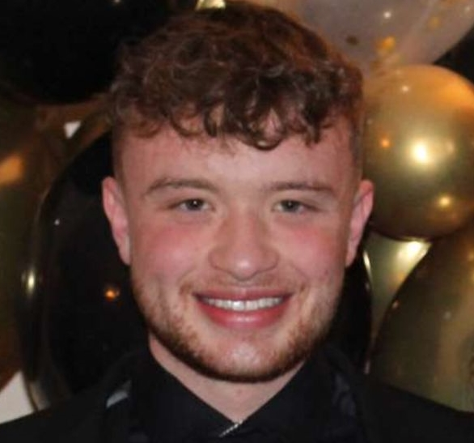

Dylan Fitzpatrick
B.A. Computer Science, Trinity College Dublin


Upcoming internship...
A project as part of the 3rd year in my Computer Science degree. This project was a collaboration of a team of 3rd and 2nd year students, totaling 10 members. I took on a managerial position in this project. The goal of this project is to use Clang APIs to detect common antipatterns within a C++ codebase such as deadlocking etc.
This was a group project comprised of 6 members including myself. This project allows a user to upload an image to a website in order to rate an image based on various metrics which our team chose. The metrics used were: brisque score, tags, trend search i.e. the image's relevance, reverse image search to show how many similar images exist and the type of the image e.g. clip art, photograph etc. The backend was written using ReactJS. My main contribution to the project was the reverse image search metric.
A web based project which takes data from Microsoft's open source calculator. Shows the user various graphs displaying contributors statistic e.g. most issues opened/closed. Also allows the user to search for a specific contributor. My contribution to this project was implementing a MySQL database to store the data in a table.
A Java based program which implements Dijkstra's algorithm. This program allows to user to find the shortest route between two bus stops, search stop details by the stop's name and search for a stop based on the arrival time. The data is taken from 3 .txt files.
A solo project made in Processing 3 which allows the user to play a game akin to Space Invaders.